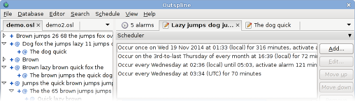

Outspline is a free and open-source modular
outliner whose functionality can be
extended with addons. The most important addon is Organism,
which adds advanced time management features and turns the
application into a personal organizer,
perfectly suited for
working with todo lists, scheduling tasks and reminding events.

Main features
Hierarchical storage of text items.
Each item can be associated with multiple event
rules, supporting events or tasks with complex
recurrences.
Times can be set in either local or UTC time.
Highlight unallocated time or overlapping events.
Schedule views can be exported to plain text for
usage on other devices.
Tray icon and notifications for alarms.
Clean interface based on tiling and tabbing rather
than floating dialogs. Possibility to set the menu bar
to autohide.
Extensive keyboard access with fully configurable
global and contextual
shortcuts.
Highly customizable through a single plain-text
configuration file.